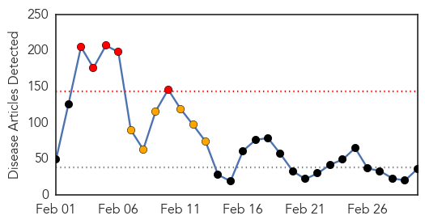
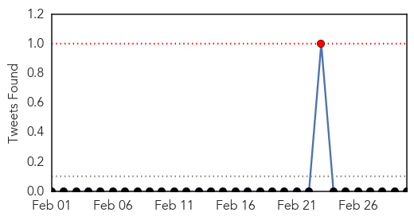
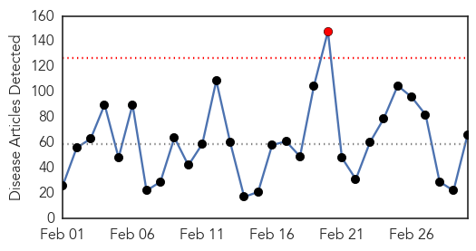
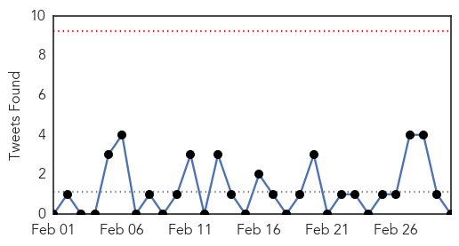
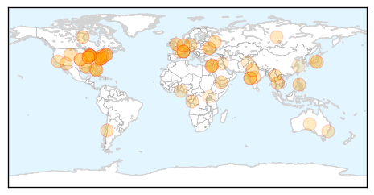
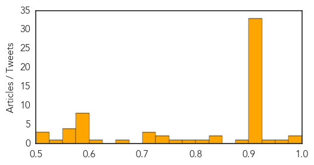

Measles
30-Day Web Trend
5 alerts, 6 warnings

30-Day Twitter Trend
1 alerts, 0 warnings

Article Locations
Article Confidences

Top Articles:
- 0.986
- MMR vaccinations spike in Arizona; are you up to date?
- 0.961
- Measles scare over with no spread
- 0.946
- WHO calls for more measles vaccination in Europe as large outbreaks persist
- 0.945
- Metro Brief: District of Columbia confirms second case of measles in 2015
- 0.911
- US Measles Outbreak a Wake-Up Call
- 0.907
- Three Berkshire County schools fall below suggested minimum measles inoculation threshold
- 0.907
- Sweden reports 1st measles case; antivaxxers and war blamed for Bosnia’s outbreak
- 0.901
- Liberia Ebola Situation Report no. 74 - 25 February 2015 - Liberia
- 0.897
- Immunization rates relatively high among schools in area
- 0.878
- Vaccination and public health
- 0.871
- Seth Mnookin on vaccination and public health
- 0.854
- Parents increasingly ask doctors to delay vaccines
- 0.841
- Dana Hills High School
- 0.805
- parents asking doctors to delay vaccinating their children « CBS Atlanta
- 0.804
- Bioterrorism, public health, superbug, biolabs, epidemics, biosurveillance, outbreaks
- 0.804
- Report: Parents have pushed for delays in vaccinations
- 0.793
- Doctors warn of 'worrisome' trend as parents increasingly demand children's vaccines to be delayed
- 0.786
- More parents pushing doctors to postpone vaccines
- 0.780
- Feds weigh in on "vaccine wars"
- 0.775
- Most Doctors Give In to Requests by Parents to Alter Vaccine Schedules
- 0.765
- Doctors agree to delay vaccinations to build trust with families, study finds
- 0.735
- Survey finds parents pressuring doctors to delay children's shots
- 0.727
- Survey: More parents seek vaccine delays
- 0.724
- WHO calls for scaling up vaccination against measles
- 0.707
- WHO seeks to improve immunization access in Central Africa
- 0.673
- Area health professionals stress importance of vaccines
- 0.659
- Why I Believe Vaccines Should Not Be Mandatory
- 0.652
- Unvaccinated children in area schools are topic of letter sent to community
- 0.652
- Doctors Often Yield to Parents' Requests to Delay Kids' Vaccines
- 0.620
- Minnesota bill would require parents talk with doctor before kids skip vaccinations
- 0.614
- MEASLES — How does your local school rank? A new look as state lists percentage of school measles exemptions -- Port Angeles Port Townsend Sequim Forks Jefferson County Clallam County Olympic Peninsul
- 0.605
- Propaganda Assault on Informed Consent
- 0.604
- Doctors Often Yield to Parents' Requests to Delay Kids' Vaccines
- 0.585
- Have You Heard About the Other Vaccination Movement That’s Causing ‘Tension’ Between Doctors and Parents?
- 0.571
- U.S. Parents Pressure Doctors to Spread Out Kid Vaccinations
- 0.509
- State a leader in controlling infectious diseases
Top Tweets:
-
No tweets found for Mar 02, 2015
Unknown
30-Day Web Trend
1 alerts, 0 warnings

30-Day Twitter Trend
0 alerts, 0 warnings

Article Locations
Article Confidences
Top Articles:
- 0.980
- Scope Superbugs Linked to Unreported Deaths
- 0.978
- Jaundice Cases Go up to Five in Jeypore
- 0.955
- 2 dead, over 170 potentially exposed in 'superbug' outbreak at L.A. hospital
- 0.929
- Six wards remain closed after norovirus outbreak at Boston Pilgrim Hospital
- 0.917
- Chicago Tribune
- 0.917
- Chicago Tribune
- 0.917
- Chicago Tribune
- 0.917
- Chicago Tribune
- 0.917
- Chicago Tribune
- 0.917
- Chicago Tribune
- 0.917
- Chicago Tribune
- 0.917
- Chicago Tribune
- 0.917
- Chicago Tribune
- 0.917
- Chicago Tribune
- 0.917
- Chicago Tribune
- 0.917
- Chicago Tribune
- 0.917
- Chicago Tribune
- 0.917
- Chicago Tribune
- 0.917
- Chicago Tribune
- 0.917
- Chicago Tribune
- 0.917
- Chicago Tribune
- 0.917
- Chicago Tribune
- 0.917
- Chicago Tribune
- 0.917
- Chicago Tribune
- 0.917
- Chicago Tribune
- 0.917
- Chicago Tribune
- 0.917
- Chicago Tribune
- 0.917
- Chicago Tribune
- 0.917
- Chicago Tribune
- 0.917
- Chicago Tribune
- 0.917
- Chicago Tribune
- 0.917
- Chicago Tribune
- 0.917
- Chicago Tribune
- 0.917
- Chicago Tribune
- 0.917
- Chicago Tribune
- 0.910
- The world windows to Thailand
- 0.910
- The world windows to Thailand
- 0.887
- Florida Leprosy Outbreak Linked To Nine-Banded Armadillos
- 0.836
- CDC Plans Program to Combat Clostridium Difficile Infections
- 0.832
- Flu cases decrease, hospitals lift restrictions
- 0.817
- Two Strains of H.I.V. Cut Vastly Different Paths
- 0.798
- Timely warning over killer virus
- 0.765
- Here Is Proof That Doctors Prescribe Bogus Surgeries, Unnecessary Tests And Take Kickbacks
- 0.735
- Karachi Village Residents Report New Cases of Sleeping Disorder
- 0.730
- Why You Should Deworm Every 3 Months
- 0.723
- Deadly ‘bioterror’ bacteria is released from high-security lab
- 0.722
- Studies linking fluoride in water to health issues prompt Australian review
- 0.705
- A Surgery Standard Under Fire
- 0.669
- Major insurer announces chairman change
- 0.605
- pan-European news, features and opinions
Showing top 50 articles...
Top Tweets:
- 0.726
- el beso en la frente que dice de todo... Y justo en la ma√±ana üòÆüòè
- 0.705
- March is only 2 days old and KSA has already reported 11 MERS cases & 5 deaths. 4 cases, 4 deaths today. http://t.co/7EeTvgSaLp